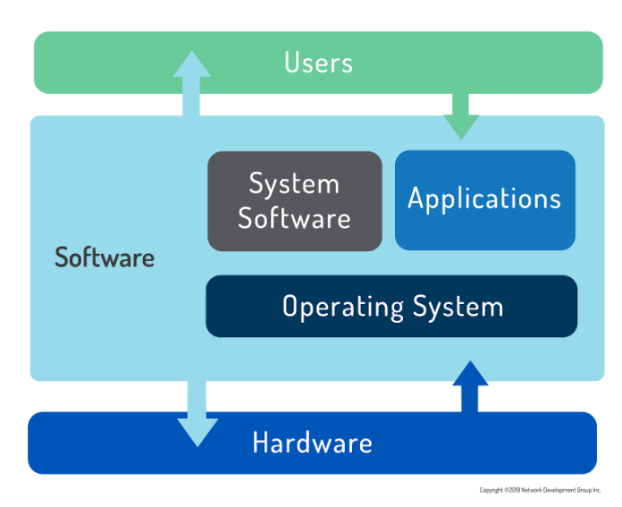

NDG Linux Essentials - Chapter 2 - Operating Systems
2.1 Operating Systems.
An operating system is software that runs on a computing device and manages the hardware and software components that make up a functional computing system.
Modern operating systems don’t just manage hardware and software resources:
- they schedule programs to run in a multi-tasking manner (sharing the processor so that multiple tasks can occur apparently simultaneously)
- provide standard services that allow users and programs to request something happen (for example a print job) from the operating system
- provided it’s properly requested, the operating system will accept the request and perform the function needed.
Regardless computer complexity (server, supercomputer, Desktop, etc), the generic term operating system is used to describe whatever software is booted and run on a device.

Computer users today have a choice mainly between three major operating systems: - Microsoft Windows - It is unique in its underlying code. - Apple macOS - It is a fully-qualified UNIX distribution based on BSD Unix. Complemented by a large amount of proprietary code. - It runs on hardware specifically optimized. - Linux - Linux can be any one of hundreds of distribution packages designed or optimized for whatever task is required.
2.1.1 Decision Points (The first decision when specifying any computer system).
The machine’s role: - Will you be sitting at the console running productivity applications or web browsing? → Desktop - Will the machine be accessed remotely by many users or provide services to remote users? → Server
Servers generally run as a CLI, which frees up resources for the real purpose of the computer: serving information to clients
Function.
- Is there specific software it needs to run, or specific functions it needs to perform?
- Will there be hundreds, even thousands, of these machines running at the same time?
- What is the skill-set of the team managing the computer and software?
Life Cycle. The service lifetime and risk tolerance of the server also needs to be determined.
- Operating systems and software upgrades come on a periodic basis, called a release cycle.
- Vendors only support older versions of software for a certain period of time before not offering any updates; this is called a maintenance cycle or life cycle.
In an enterprise server environment, maintenance and release cycles are critical considerations because it is time-consuming and expensive to do major upgrades. There is a fair amount of work involved in upgrading a server due to specialized configurations, application software patching and user testing, so a proactive organization will seek to maximize their return on investment in both human and monetary capital. Modern data centers are addressing this challenge through virtualization. The need for physical hardware upgrades has also been decreased immensely with the advent of cloud services providers like Amazon Web Services, Rackspace, and Microsoft Azure.
Stability. Individual software releases can be characterized as beta or stable depending on where they are in the release cycle.
- Users who need the latest features can decide to use beta software.
- Software in the open source realm is often released for peer review.
- Production servers typically use stable software unless needed features are not available and the risk is outweighed.
- Conversely, proprietary software will often be kept secret for most of its development.
Compatibility.
Another loosely-related concept is backward compatibility which refers to the ability of later operating systems to be compatible with software made for earlier versions.
The norm for open source software development is to ensure backward compatibility first and break things only as a last resort. The common practice of maintaining and versioning libraries of functions helps this greatly.
Cost.
Ultimately, the choice of operating system will be affected by available hardware, staff resources and skill, cost of purchase, maintenance, and projected future requirements.
Interface.
Today, operating systems offer both GUI and CLI interfaces, however, most consumer operating systems (Windows, macOS) are designed to shield the user from the ins and outs of the CLI.
2.2 Microsoft Windows.
Microsoft offers different operating systems according to the machine’s role:
- desktop:
- The desktop version of Windows has undergone various naming schemes with the current version
- New versions of this OS come out every 3-5 years and tend to be supported for many years.
- Backward compatibility is a priority for Microsoft.
- server
- The server can run a GUI but recently Microsoft, largely as a competitive response to Linux, has made incredible strides in its command line scripting capabilities through PowerShell.
- Microsoft also actively encourages enterprise customers to incorporate its Azure cloud service.
2.3 Apple macOS.
Apple makes the macOS operating system, which is partially based on software from the FreeBSD project and has undergone UNIX certification. It is well known for being “easy to use”.
On the server side, macOS Server is primarily aimed at smaller organizations. It also provides integration with iOS devices like the iPhone and iPad.
2.4 Linux.
Linux users typically obtain an operating system by downloading a distribution.
A Linux distribution is a bundle of software, typically comprised of:
- The Linux Kernel.
- Utilities.
- Management tools.
- Software with means to update core software and install additional applications.
The distribution takes care of setting up the storage, building the kernel and installing hardware drivers, as well as installing applications and utilities to make a fully functional computer system.
The number of Linux distributions available numbers in the hundreds, so the choice can seem daunting at first. Decision rules (the same to choose an operating system):
Role.
The number of Linux distributions available numbers in the hundreds, so the choice can seem daunting at first. Distributions are available for a much wider variety of systems, from commercial offerings to specialized; from distribution create to power a supercomputer to embedded systems. These might focus on running application or web servers, productivity desktops, point of sales systems, tools dedicated to electronics design or statistical computing.
Function.
For the most part, concerns over security have been addressed through the large open source community, which monitors kernel changes for vulnerabilities and provides bug reporting and fixes at a much larger scale.
Support for necessary applications may vary and is, therefore, an additional consideration. Often application vendors choose a subset of distributions to support.
Life Cycle.
Most distributions have both major and minor update cycles to introduce new features and fix existing bugs. Additionally, there are development packages where users can contribute code and submit patches for possible inclusion into new releases..
Linux distributions can be broadly classed in two main categories:
→ enthusiast
- An enthusiast distribution such as openSUSE’s Tumbleweed has a fast update cycle, is not supported for enterprise and may not contain (or drop) features or software in the next version.
→ enterprise
- Enterprise distributions are almost the exact opposite, in that they take care to be stable and consistent, and offer enterprise-grade support for extended periods, anywhere from 5-13 years in the case of SUSE.
Application software may be written such that it only supports a specific release of a distribution, requiring users to remain on an older, less secure operating system than they might like. Therefore, some Linux releases are considered to have long-term support (LTS) of 5 years or more while others are only supported for two years or less.
Stability.
-
Some distributions offer stable, testing, and unstable releases. When features have been integrated into the system for a long time, with most of the bugs and issues addressed, the software moves through testing into the stable release.
-
Other releases depend on beta distributions. Fedora is often considered the community-oriented beta release of RedHat.
- Features are added and changed in the Fedora release before finding their way into the enterprise-ready RedHat distribution.
Cost.
Your chosen Linux distribution itself might be zero cost, but paying for support may be worthwhile depending on organizational needs and capabilities.
Interface.
Linux can be used in one of two ways:
→ graphical (GUI)
- In graphical mode, users can have several different windows with terminal applications (shells) open, which is very helpful when performing tasks on multiple remote computers. Administrators and users can log-in with their username and password through a graphical interface.
→ non-graphical (CLI).
-
The second type of interface, the CLI, is a text-based interface to the computer, where the user types in a command and the computer then executes it.
-
The CLI environment is provided by an application on the computer known as a terminal.
-
The terminal accepts what the user types and passes to a shell.
-
The shell interprets what the user has typed into instructions that can be executed by the operating system.
-
Outputs or error could be displayed in the terminal.
-
-
Text editors, web browsers, and email clients are all presented in text format only.
- This is how UNIX operated before graphical environments were the norm.